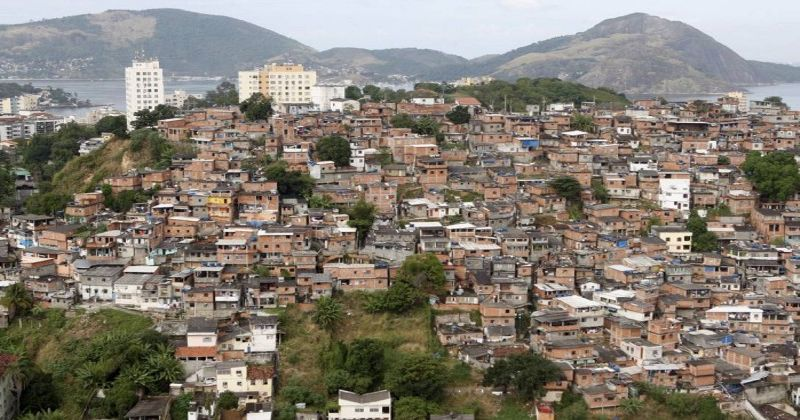
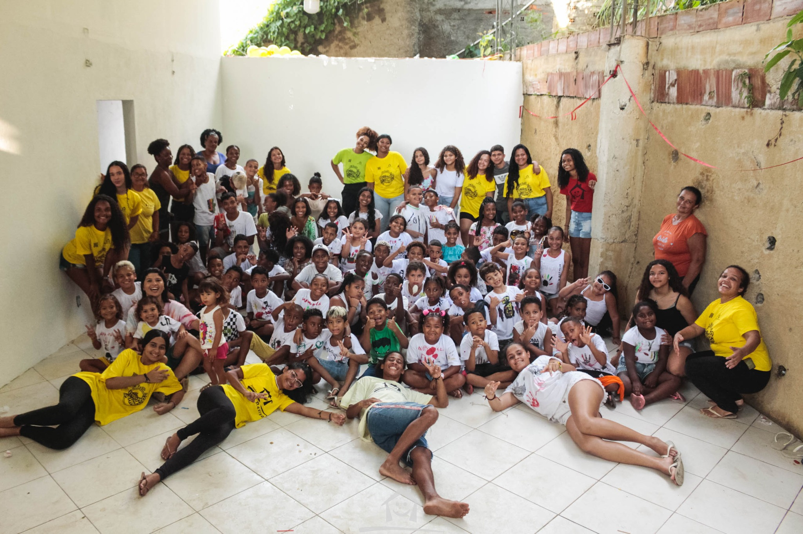
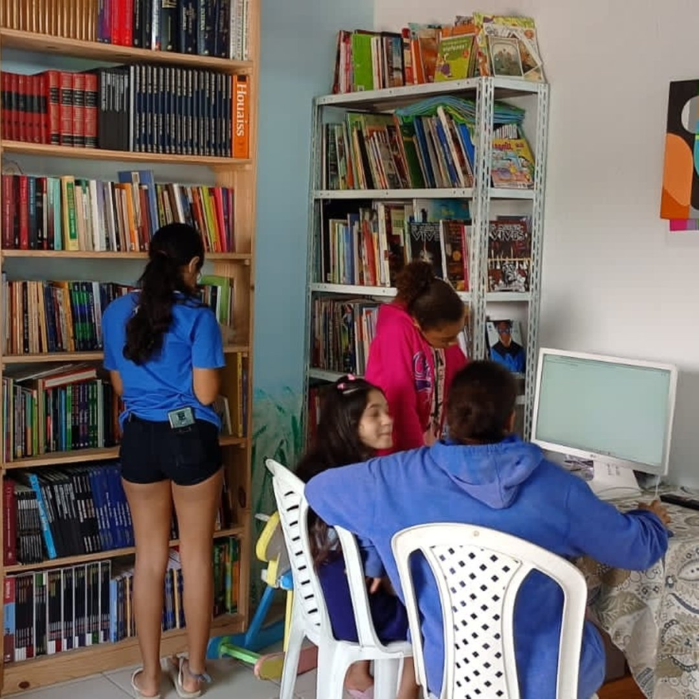

Quem nós Somos
O Projeto Social Casa Reviver está localizado no Morro do Estado, considerada a maior favela do município de Niterói.
O Projeto foi idealizado e fundado no dia 06 de junho de 2006 pelo casal Vinicius Silva de Souza, bacharel em Teologia, e Karina da Silva, assistente social.

A Casa Reviver surgiu em 2006, após um momento
trágico na vida de Vinicius, a morte de seu irmão em razão
do envolvimento com o poder paralelo presente na
comunidade, Neste contexto de desigualdades sociais e
perdas pessoais, Vinicius viu um caminho para a implantação
de uma pequena ação social cristã local, que aos poucos foi
se ampliando e acabou se transformando num trabalho de
desenvolvimento comunitário com princípios cristãos.
As ações sociais da Casa Reviver são realizadas numa
rede de parcerias, formada com o apoio da própria
comunidade e com a participação voluntária de diferentes
agentes e atores sociais, como estudantes universitários,
Universidades públicas e privadas, ONGs, igrejas
protestantes, unidades públicas de saúde e colaboradores
financeiros.
O público-alvo são grupos de crianças, adolescentes e
seus familiares, todos moradores do Morro do Estado e de
outras favelas deste complexo, que são atendidos
semanalmente nas atividades socioeducativas e de assistência
oferecidas pelo Projeto. São realizadas ações educativas e
formativas diversificadas, que envolve musicalização, contação
de histórias com princípios éticos, prática de esportes,
visitações a museus, teatros, cinemas e diversos eventos
culturais e recreativos, com a finalidade de ampliar a visão de
mundo dos grupos atendidos, possibilitando o seu acesso aos
bens sociais e culturais que formam a vida comum na
cidade e são um direito de todos os cidadãos.

Além das oficinas socioeducativas diárias, a Casa Reviver
tem como um dos seus principais objetivos o acompanhamento
familiar, visando o fortalecimento dos vínculos de afeto e
cuidados. Com este propósito, são desenvolvidas atividades
desde a gestação e o nascimento da criança, que envolve a
Roda de Gestantes da Casa Reviver, em que a futura mãe tem
acesso ao Kit Enxoval e Book Gestante (fotográfico),além de
encontros semanais de orientação sobre a importância do
pré-natal e os desafios da gestação. Dentro desta mesma
lógica também ocorre o projeto Maternando, que consiste na
formação de uma rede de apoio e assistência às mães
participantes.
Trabalhando não apenas com os desafios da
formação de crianças e adolescentes, e suas famílias, a
Casa Reviver também tem investido na educação de jovens
e adultos, através do projeto Ler o Mundo, que incentiva a
prática da leitura e o desenvolvimento da escrita com
pessoas em processo de alfabetização
Todas as ações da Casa Reviver se articulam para
promover a criatividade, o fortalecimento da autoestima, o
desenvolvimento do senso crítico, a cidadania individual e
coletiva, a valorização cultural, a fim de contribuir para o
desenvolvimento humano e social dos grupos familiares do
Morro do Estado.
Deste modo, a Casa Reviver constitui um núcleo de
convivência e tem se colocado como um agente de
transformação, operando com uma metodologia
sociopedagógica que atenda às características etárias,
Culturais e sociais dos moradores da favela Morro do
Estado.
Visão
 Ser um agente de transformação integral a partir dos valores sociais e culturais da própria comunidade, com seus talentos e potencialidades.Missão
Nossa missão: Atuar como facilitadores do desenvolvimento integral das crianças, dos adolescentes e de seus familiares, através de uma abordagem socio-pedagógica holística, oferecendo atividades educativas e formativas, de socialização, como momentos de lazer, com pessoas em situação de vulnerabilidade social, afim de promover o senso de protagonismo e empoderamento individual e coletivo e potencialização de talentos singulares.
Valores
- AUTÊNTICOS
- RELEVANTES
- EXCELENTES
- ANFITRIÕES
- ANIMADOS
- GENEROSOS
NÓS ANDAMOS DA MANEIRA QUE FALAMOS
NÓS ESTAMOS NO PULSO DO TEMPO
NÓS DAMOS O NOSSO MELHOR PARA O PROXIMO
NÓS CRIAMOS UMA ATMOSFERA DE “BEM-VINDO À CASA”
UM SORRISO PODE MUDAR VIDAS
NÓS SOMOS ABENÇOADOS PARA SERMOS UMA BÊNÇÃO